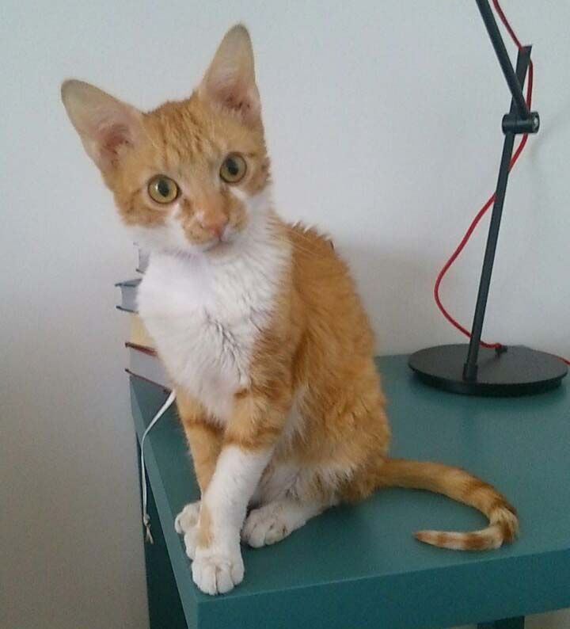

Das bin ich
Mein Name ist Spencer Hasenfuß. Ich bin als Fundkater im Tierheim gelandet-mit struppigem Fell, marodem Bäuchlein und unterernährt. Du kannst dir vorstellen, dass es mir im Heim nicht besonders gut gefallen hat, vor allem weil ich ja eher schüchtern bin...der Beiname "Hasenfuß" kommt ja nicht von ungefähr...Also war ich ziemlich happy, als mich da jemand rausgeholt hat. Mittlerweile habe ich jetzt seit fünf Jahren eine Wohnung in Graz-Lend, groß genug für mich und der Balkon ist auch groß genug...ich bin ja nicht so anspruchsvoll... Gut, ich wusste dass da einiges an Erziehungsarbeit auf mich zukommen würde, aber ich habe einen ganz brauchbaren Menschen erwischt. Leider haben nicht alle soviel Glück, deshalb habe ich auch ein paar Links ertstellt, damit du dich informieren kannst!
